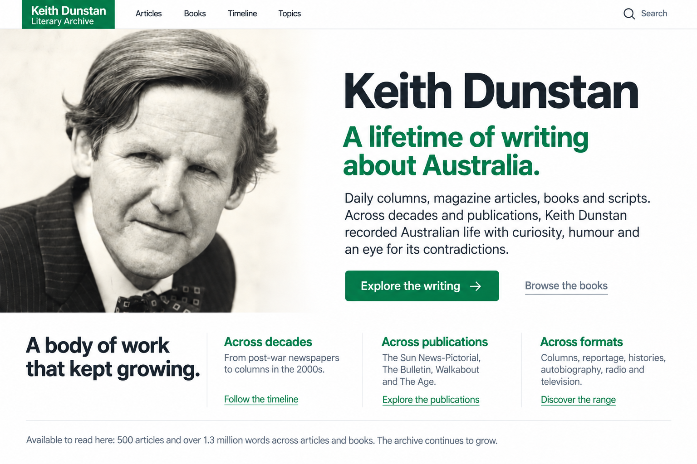
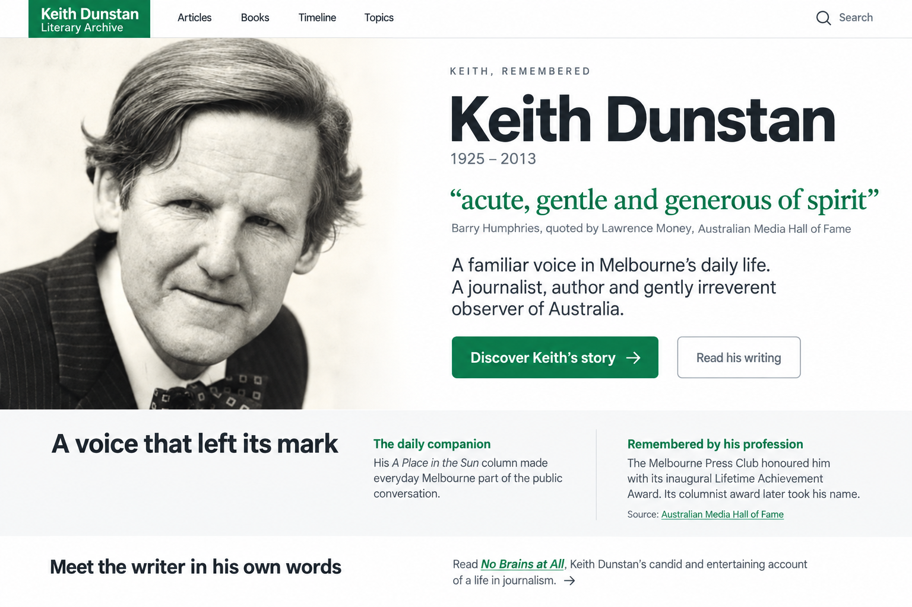
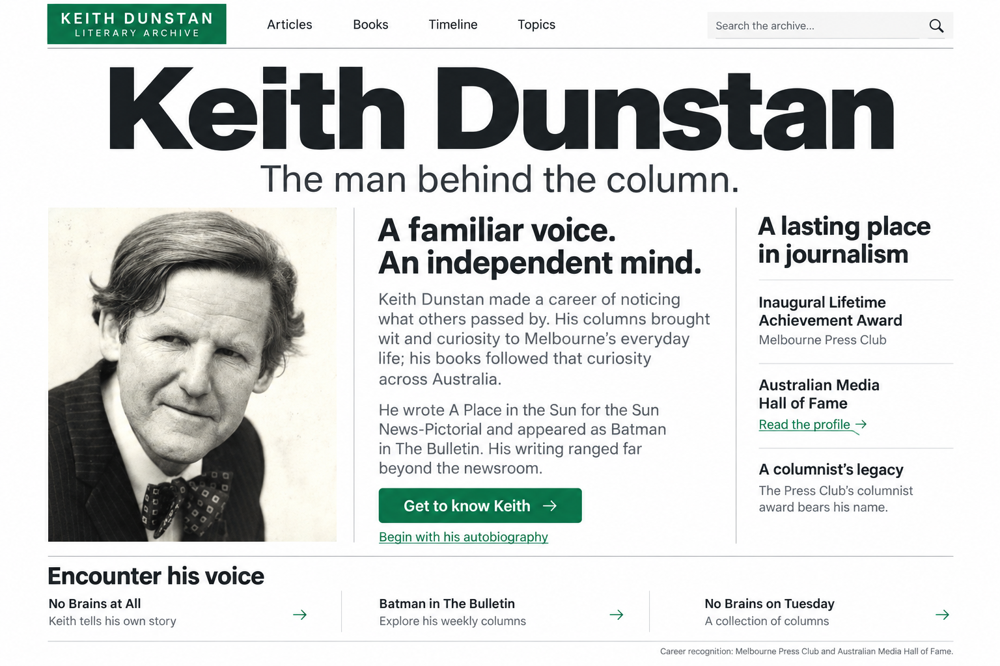
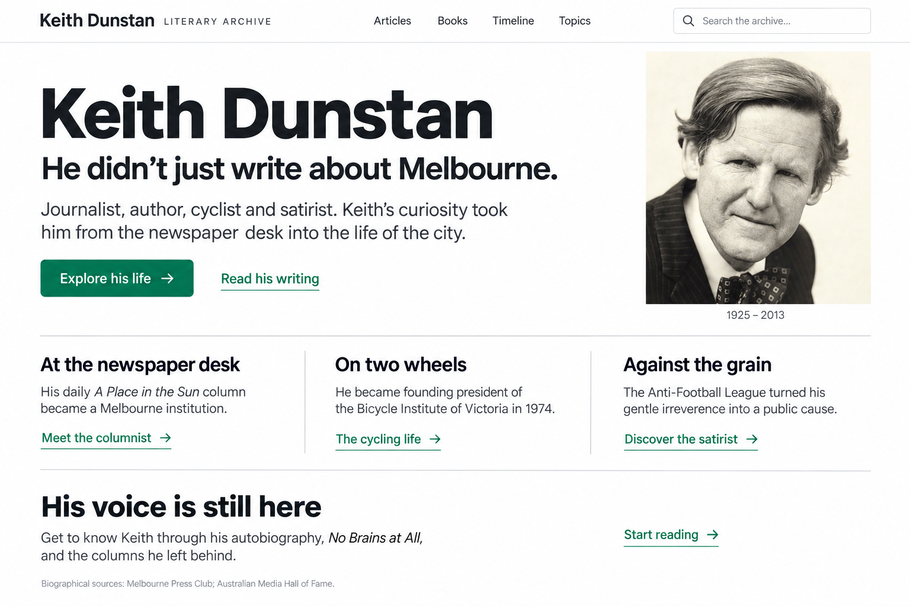

Keith Dunstan: a lifetime of writing
The latest revision keeps the selected portrait-led layout and focuses on the breadth and volume of the writing. Reply in the agent chat with feedback. Earlier concepts remain below for comparison.
Latest revision: the body of work
Across decades, publications and formats. The figures describe content currently in the archive, not total lifetime output.

1. Keith, remembered
A portrait and a short attributed tribute introduce his character, followed by evidence of his professional legacy.

2. The man behind the column
An editorial profile puts his personality alongside his standing in journalism.

3. A life that reached beyond the page
His journalism, cycling and satire show how he participated in the city he wrote about.

These are generated composition studies with proposed copy. The implementation will use the original portrait and accessible HTML. Sources: Australian Media Hall of Fame and Melbourne Press Club profile.